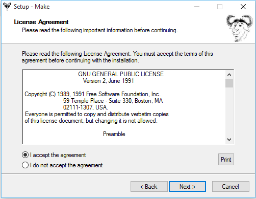
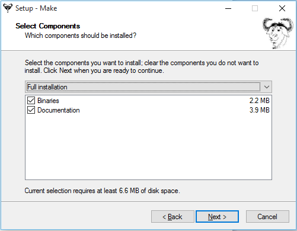
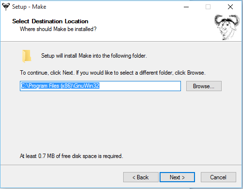

System Preparation¶
The instalation of cloudmesh is easiest if you prepare your system with some elementary software. We provide such information for the following Operating systems:
- Linux
- Ubuntu
- Centos
- OSX
- Windows
For each of these operating systems we are provide specific instalation instructions.
Prepare the system¶
OSX¶
On OSX we recommend that you use python 2.7.10. This version of python is easy to install while downloading the dmg and installing it on the system. You will still have access to the python version distributed with the original OSX operating system.
To test out which version you have activated, you can use in the commandline:
python --version
pip --version
They should show something similar to:
Python 2.7.10
pip 7.0.3
Oon OSX as well as the other operating systems we require you to use virtualenv. First you need to find which version of python you use. You can say:
which python
It will give you the path of the python interpreter. Let us assume the interpreter was found in /usr/local/bin/python. Next you can create a virtual ENV with:
virtualenv -p /user/local/bin/python ~/ENV
You will need to activate the virtualenv:
source ~/ENV/bin/activate
If sucessfull, your terminal will have (ENV) as prefix to the prompt:
(ENV)machinename:dirname user$
As OSX comes with older versions of pip at this time, it is important that you first prepare the environment before you install cloudmesh client. To do so please isseue the following commands:
export PYTHONPATH=~/ENV/lib/python2.7/site-packages:$PYTHONPATH
pip install pip -U
easy_install readline
easy_install pycrypto
pip install urllib3
Warning
We found that readline and pycrypto could not be
installed with pip at the time of writing of this manual,
despite the fact that pip installed it. Howerver, the
version installed with pip were not usable. The workaround
is to use easy_install for these packages. If you have a
better idea how to fix this, let us know and send mail to
laszewski@gmail.com.
It is recommended that you test the version of the python interpreter and pip again:
pip --version
which should give the version 7.1.2
python --version
which should give the version Python 2.7.10
Windows 10¶
Install Python¶
Warning
python may come with cygwin and this may therefor be uneccesarry. This needs to be investigated, and possibley this sectin needs to be removed.
Python can be found at http://www.python.org. We recommend to download and install the newest version of python. At this time we recommend that you use version 2.7.10. Other versions may work to, but are not supported or tested. A direct link to the install can be found at
In powershell you can type:
explorer https://www.python.org/ftp/python/2.7.10/python-2.7.10.msi
Thsi will open the Windows explorer, download the msi and ask you to install it.
Once downloaded, open it by clicking on the downloaded file. You may also want to change the properties and add python to the path
Install Git in Windows¶
To download and install git for windows, please go to
Todo
check if this is the right way to do so
You will be asked a couple of questions and you should make sure that you install it so that git can be run from the terminal. Please provide screenshots or write down what needs to be checked on.

Install make In Windows¶
To download and install “make” for windows, please go to:
This will download the installer for make on your machine. Follow the on-screen instructions and make will be installed. Next, you need to add the location of “make.exe” to your system PATH environment variable.
Make.exe will most likely be installed at:
C:\Program Files (x86)\GnuWin32\bin\make.exe
Add this location to the PATH variable:
PATH = %PATH%;C:\Program Files (x86)\GnuWin32\bin;
Install chocolatey¶
We install cygwin via chocolatey. To do so you first have to start a power shell as adminstrator with:
PS> Start-Process powershell -Verb runAs
Allow execution of scripts:
PS> Set-ExecutionPolicy Unrestricted
Next execute the command to install chocolatey:
PS> iex ((new-object net.webclient).DownloadString('https://chocolatey.org/install.ps1'))
Unset the script execution permission:
Set-ExecutionPolicy Restricted
Administrative Powershell¶
Note
Often you will need to execute commands in an administrative powere shell. You can right click or CTRL click (dependent on your configuration) on the powereshell icon in order to obtain a powershell with increased administrative rights.
Install Cygwin¶
Next execute in a powershell:
choco install --force -y cygwin
Note: if Cygwin is already installed, –force will reinstall it.
Install apt-cyg¶
Now open cygwin window by clicking on the desktop icon. Put the following command into Cygwin terminal (its shorcut can be found on your Desktop):
lynx -source rawgit.com/transcode-open/apt-cyg/master/apt-cyg > apt-cyg
install apt-cyg /bin
This will give you a nice command to add additional packages to cygwin without using the cygwin GUI. You will also want the following appliations:
apt-cyg install wget
apt-cyg install emacs
apt-cyg install git
apt-cyg install curl
apt-cyg install nc
apt-cyg install make
apt-cyg install gcc-g++ diffutils libmpfr-devel libgmp-devel libmpc-devel
apt-cyg install db
Using cygwin¶
When starting a new powershell terminal you can simply typ into it:
cygwin
This way you can easily past and copy into the cywin terminal that is started via powershell. This is extremly useful if you run Windows in a virtual server and want to easily past and copy strings to and from the host operating system. In virtualbox you maus enable past frm clipboard in bidirectional mode.
Obsolete - Install Gnu Like tools - Erika and Gourav¶
Install Git in Windows¶
To download and install git for windows, please go to
You will be asked a couple of questions and you should make sure that you install it so that git can be run from the terminal.
Read and Accept the License to proceed.

Select which components need to be installed. Keep the default options.

We prefer to use GitBash as our command line tool for Git

Select OpenSSH as the secure shell client program.

Keep the default option selected - MinTTY terminal

Then select the default options to proceed; Git will be installed on your machine.
To check if Git is installed on your machine, open GitBash from Start menu and type the following:
git --version
This should return git version 2.5.0.windows.1
Install make In Windows¶
To download and install “make” for windows, please go to:
This will download the installer for make on your machine. Follow the on-screen instructions and make will be installed.

Read and Accept the License to proceed.
Select which components need to be installed. Keep the default options.
Select path where make is to be installed on your machine.
Then select the default options to proceed; Make will be installed on your machine.
Next, you need to add the location of “make.exe” to your system PATH environment variable.
Make.exe will most likely be installed at:
C:\Program Files (x86)\GnuWin32\bin\make.exe
Add this location to the PATH variable:
PATH = %PATH%;C:\Program Files (x86)\GnuWin32\bin;
Makeing python usable¶
To test if you have the right version of python execute:
python --version
which should return 2.7.10 and:
pip --version
You might see version 7.0.1 in which case you should update with:
pip install -U pip
Note
the update may not work as some error is reported. This needs to be investigated and a workaround needs to be found.
We want also to install virtualenv:
pip install virtualenv
and pyreadline:
pip install pyreadline